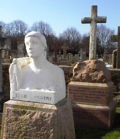

L'églyise pârouaîssiale dé St. Saûveux

1961
Viyiz étout: Tchiquechose de spécial à Saint Sauveux Les Caves dé Champion Dialogue entre Jeanneton de St. Saouvoeux et Nénai de Saint-Ouan Dans les Pâraisses! Vaincre ou Mouori Les pâraîsses d'Jèrri L's êtchussons des Pâraîsses d'Jèrri Oquo St-Sauveux